|
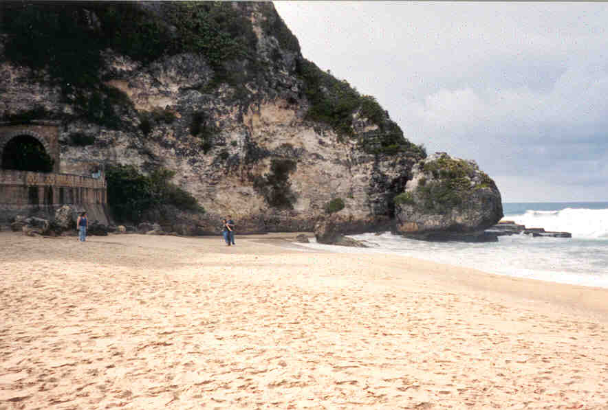
This is what is missing from Florida, a little bit of scale.
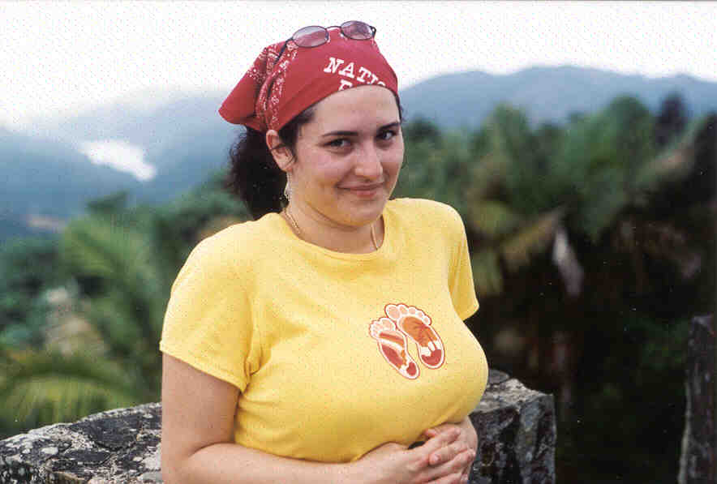
Lorraine giving me looks, from the top of Toro Negro

"Just stay calm and it will go away"

It's a wonderful life.
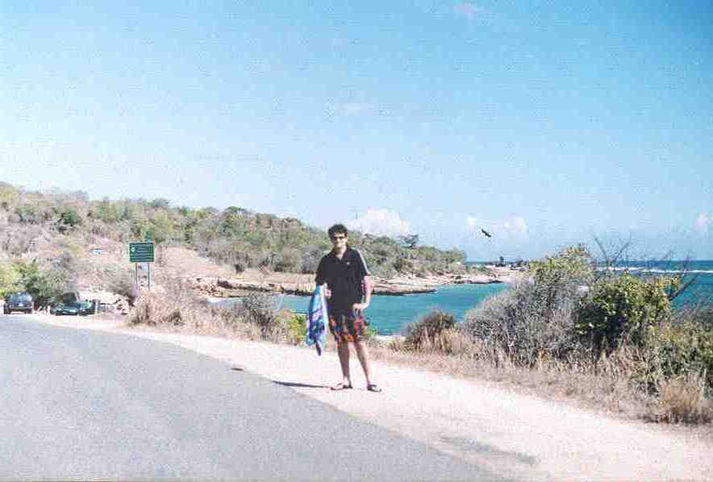
Notice the desert area with cacti and dried brush, right next to the crystal clear blue ocean!

Lorraine's comment: The Wanderer, so calm and serene
Lewey's comment: Ouch, sharp rocks!

Lorraine caught red handed (stealing berries growing wild next the path leading up Mount Toro Negro)

Rocks! Rocks are just plain cool!
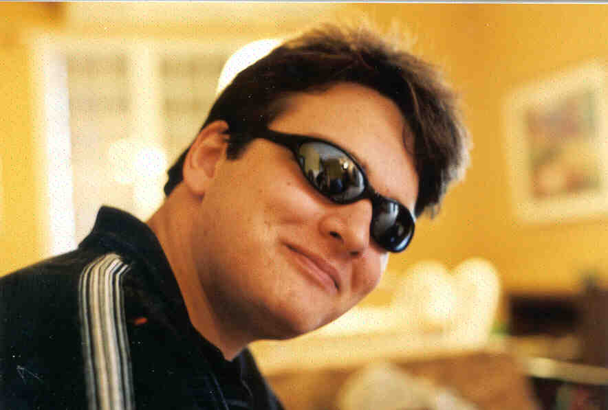
Me doing my impression of the lead singer from Smash Mouth
Lorraine's comment: good lighting (you can see her in the reflection on the sun-glasses)
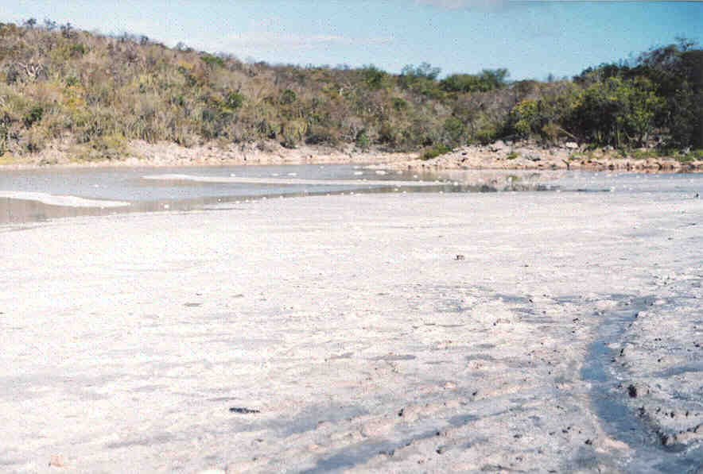
Snow in Puerto Rico? (actually lots and lots of salt)

The Gang

Us at the beach (without Sasha)

Yvonne, in the water, near the mangroves.

Experience the amazing thrills of Toro Negro!!!
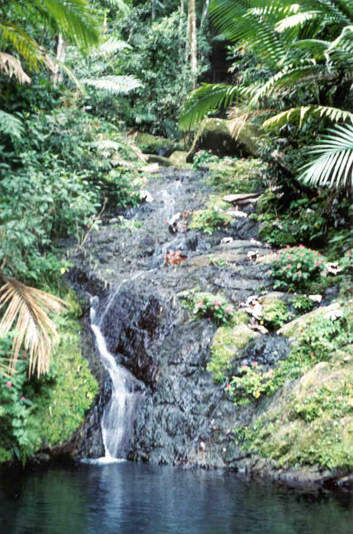
This is cold water! (coming down a mountain stream)
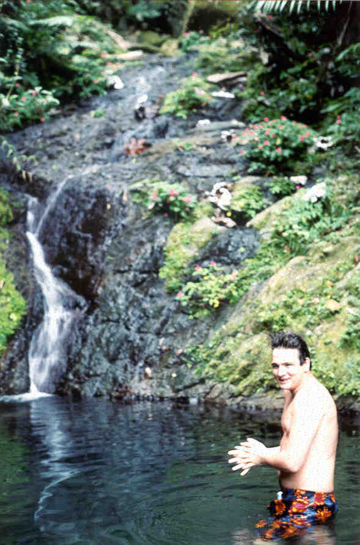
Me in the really cold water
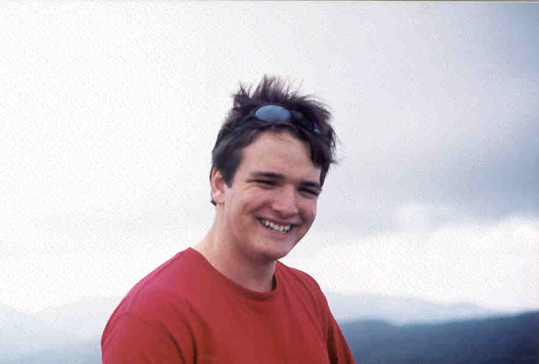
Yes, being at the top is fun.
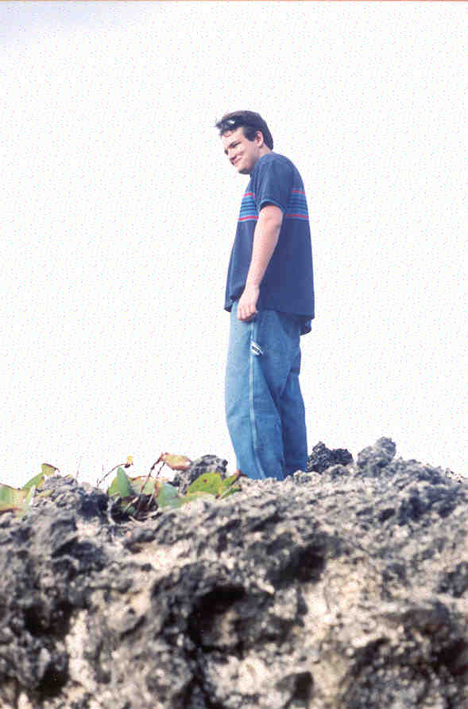
Again, let me stress this: rocks, and being on rocks, is cool!

Dona Juana waterfall.
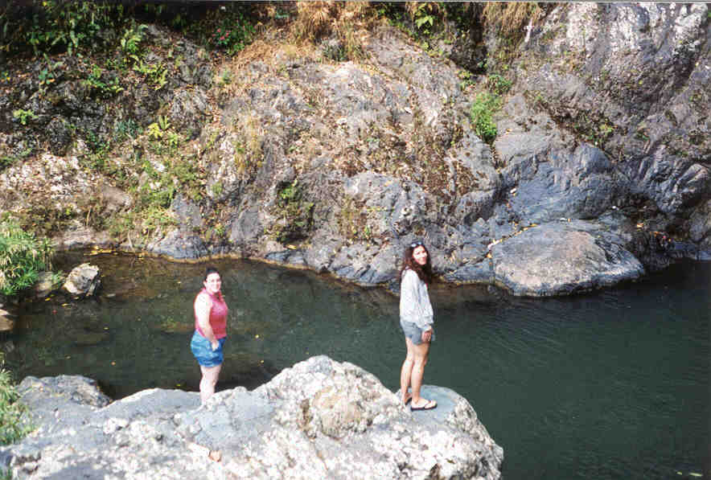
Sasha and Yvonne at the bottom of Dona Juana (notice how other people like being on rocks too!)

On the way down Toro Negro (minus Lorraine, who was probably too busy picking berries)

Lorraine's comment: Look a squished frog!
Lewey's comment: I would like to add that I protested this image from being added to this page, Lorraine however insisted. If there is anyone else out there who sees why this image should not be on this page, please know that I totally agree with you.
Lorraine's final comment: I win.
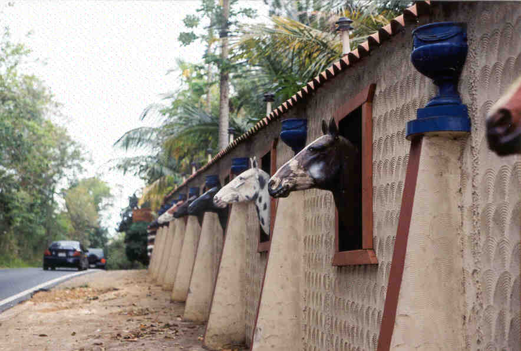
Yes this is actually what it looks like, and yes it does actually exist, it is infact a fence.
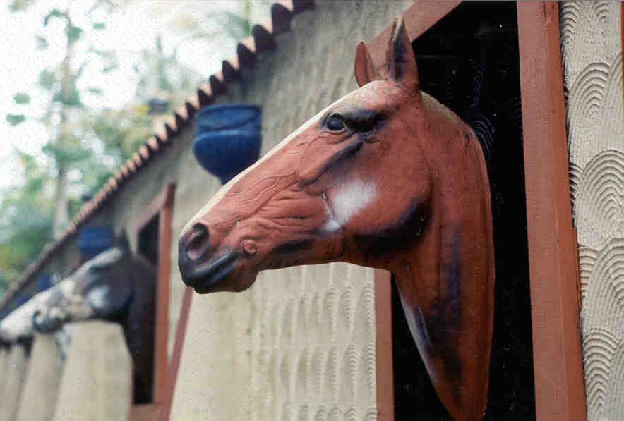
A close up of the above. If you can find a better definition of bad taste, i will be quite amazed.
Experience the amazing thrills of Toro Negro!!!

This cannon was first used in the in the 1700s to stear Peurto Rico towards a more hospitable climate. It's original location was near Greenland.

Now thats what I'm talking about!
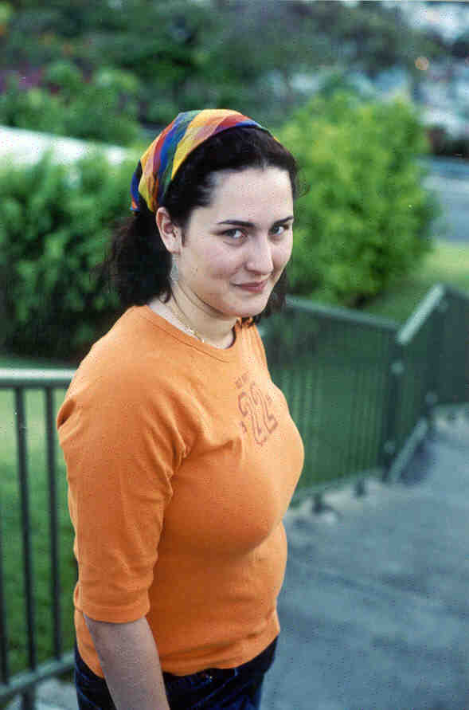
Lorraine giving me more looks.

Lewey's comment: "No, give me one of the round ones, those other ones always get stuck in the barrel"
Lorraine's comment: "Lewey may prefer rocks, I prefer something with a little more firepower"

Lewey Geselowitz - tourist extraordinaire

Again, this is what I'm talking about.
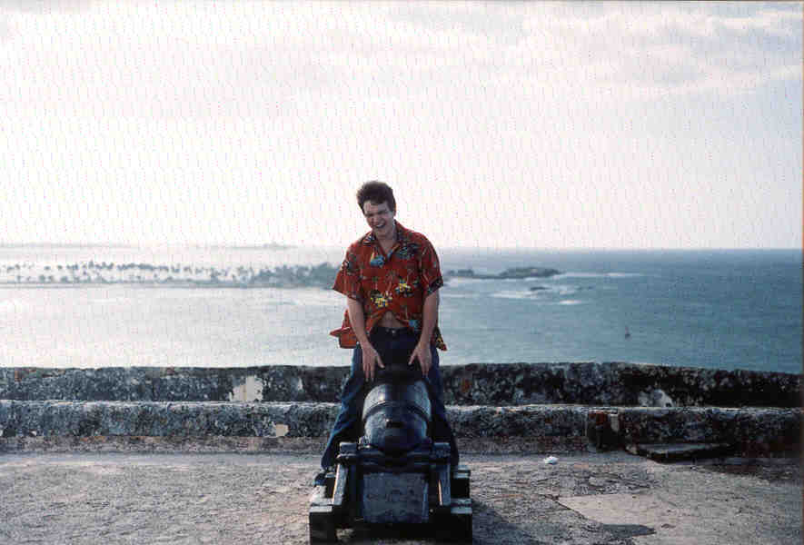
Let me put it this way: don't cheat at dominoes in Puerto Rico!
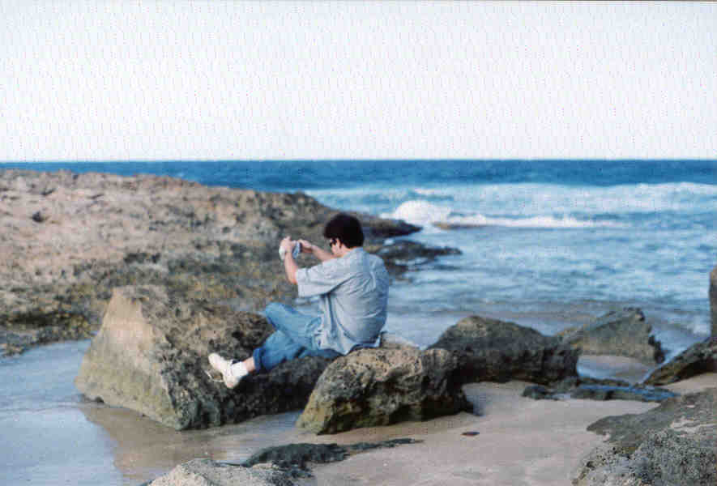
Lewey's idea of rock climbing.
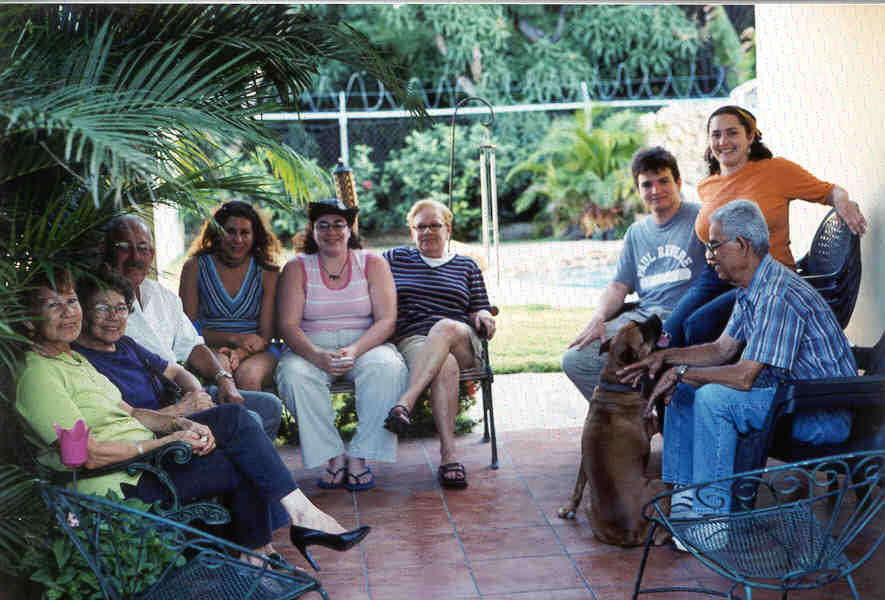
The Family (Soprano style lettering)

The roommates.
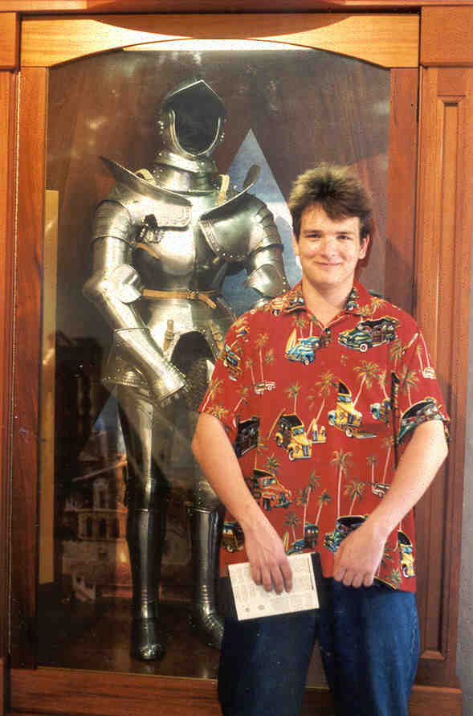
Lewey Geselowitz - tourist extraordinaire : invokes his super-human touristness powers!

Us on the stairs overlooking Ponce. Which is better than San Juan in all concievable ways. Ponce for ever!

If you look really closely coming out of a very small semi-circle in the wall is me and Lorraine's hands (on the left nearish the bottom). El Morro is big! Free Coke for anyone who can actually spot our hands (competition note: Coke may be empty upon reciet of prize).
|